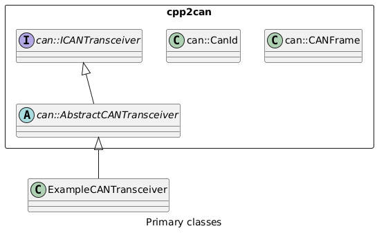
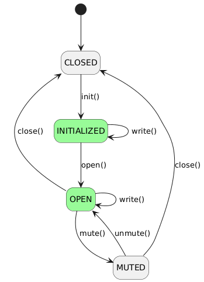

User documentation
The cpp2can module defines an abstraction layer for CAN,
enabling higher-level libraries or applications to use CAN
independent of hardware-specific implementation details.

Using CAN transceivers
For each CAN transceiver,
a concrete implementation of the can::AbstractCANTransceiver class is instantiated.
While each concrete implementation will have its own configuration to set up,
from the viewpoint of cpp2can the only configuration needed is that each CAN transceiver
is assigned a unique Bus ID which is passed to the can::AbstractCANTransceiver constructor.
Once instantiated, higher-level libraries or applications use the can::ICANTransceiver interface
to perform operations such as…
Control the CAN transceiver’s state
Send frames to the CAN bus as
can::CANFrameobjects usingwrite()Listen for CAN frames received or sent, filtered in various ways (this is described in more detail below).
Example
The following example initializes and opens the interface, then sends a CAN frame to the bus:
void doSomethingWithCAN(can::ICanTransceiver* transceiver)
{
static const uint8_t msg[] = {0, 1, 2};
if (transceiver->init() != can::ICanTransceiver::ErrorCode::CAN_ERR_OK)
{
return;
}
if (transceiver->open() != can::ICanTransceiver::ErrorCode::CAN_ERR_OK)
{
return;
}
can::CANFrame myFrame;
myFrame.setId(42);
myFrame.setPayload(msg, 3);
transceiver->write(myFrame);
}
ICANTransceiver states
The state diagram below shows the transitions that transceivers implementing ICANTransceiver follow.
The method getState() returns the current state.

Note that write() is not allowed in the CLOSED or MUTED states.
The different states allow or block CAN Rx/Tx as shown in the table below.
State |
Receive |
Transmit |
|---|---|---|
CLOSED |
No |
No |
INITIALIZED |
No |
Yes |
OPEN |
Yes |
Yes |
MUTED |
Yes |
No |
Representing CAN frames
CAN Frames are represented using the can::CANFrame class.
A CAN Frame is composed of:
CAN ID - Both the standard 11-bit identifier format and the extended 29-bit identifier format are supported.
can::CanIdis a helper class to assist in forming and identifying CAN IDs.Data payload - The standard maximum payload length is 8 bytes, but this can be set to 64 bytes, as introduced by CAN FD, by compiling with the preprocessor define
CPP2CAN_USE_64_BYTE_FRAMES.Timestamp - This is expected to be set by the transceiver on receive or send.
Example
In the example below, two CAN Frames are created. One with a standard 11-bit ID, and the other with a 29-bit extended ID.
static const uint8_t canData[] = {0, 1, 2, 3, 4, 5, 6, 7};
::can::CANFrame standardIdFrame(0x558, canData, 8);
::can::CANFrame extendedIdFrame(can::CanId::Extended<0x17002345>::value, canData, 8);
CAN listeners and filters
The can::ICANTransceiver interface supports adding and removing listeners for…
CAN frames sent
CAN frames received
State changes in the CAN transceiver
![caption Listener classes
package cpp2can <<Rectangle>> {
interface can::ICANTransceiver {
write(can::CANFrame, ICANFrameSentListener)
addCANFrameListener(ICANFrameListener&)
addVIPCANFrameListener(ICANFrameListener&)
removeCANFrameListener(ICANFrameListener&)
addCANFrameSentListener(IFilteredCANFrameSentListener&)
removeCANFrameSentListener(IFilteredCANFrameSentListener&)
setStateListener(ICANTransceiverStateListener&)
removeStateListener()
}
interface can::ICANFrameSentListener
interface can::ICANFrameListener
interface can::IFilteredCANFrameSentListener
interface can::ICANTransceiverStateListener
abstract class can::AbstractBitFieldFilteredCANFrameListener
abstract class can::AbstractIntervalFilteredCANFrameListener
can::ICANFrameListener <|-- can::AbstractBitFieldFilteredCANFrameListener
can::ICANFrameListener <|-- can::AbstractIntervalFilteredCANFrameListener
can::ICANTransceiver "1" o-- "0..*" can::ICANFrameListener
can::ICANTransceiver "1" o-- "0..*" can::IFilteredCANFrameSentListener
can::ICANTransceiver "1" o-- "0..1" can::ICANTransceiverStateListener
}](../../../../../_images/plantuml-93a9576744d42267fe0dc5f378ae117ba9c9d2fa.png)
can::ICANFrameSentListener
An object implementing can::ICANFrameSentListener
can be passed to the overloaded method can::ICanTransceiver::write()
to provide a callback method which will be called when the CAN Frame is transmitted.
can::ICANFrameListener
An object implementing can::ICANFrameListener provides a callback
for received CAN Frames that match its filter.
These can be added to (or removed from) a list of such objects maintained by the transceiver
by calling the following methods of can::ICanTransceiver.
Each can::ICANFrameListener object must be configured with a filter before being added to the list.
Method |
Description |
|---|---|
|
Add |
|
Add |
|
Remove |
can::IFilteredCANFrameSentListener
An object implementing can::IFilteredCANFrameSentListener provides a callback
for transmitted CAN Frames that match its filter.
These can be added to (or removed from) a list of such objects maintained by the transceiver
by calling the following methods of can::ICanTransceiver.
Each can::IFilteredCANFrameSentListener object must be configured with a filter before being added to the list.
Method |
Description |
|---|---|
|
Add |
|
Remove |
can::ICANTransceiverStateListener
Only one can::ICANTransceiverStateListener object is supported by each can::ICanTransceiver object.
Method |
Description |
|---|---|
|
Set |
|
Unset the CAN transceiver state listener |
CAN Filters
Two of the listener interfaces use can::IFilter for filtering CAN frames:
can::ICANFrameListeneris used to capture CAN frames received by the transceiver that match its filter.can::IFilteredCANFrameSentListeneris used to capture CAN frames sent by the transceiver that match its filter.

can::IntervalFilter
A can::IntervalFilter is used to specify a continuous range of CAN IDs to match in a listener.
can::AbstractStaticBitFieldFilter
A can::AbstractStaticBitFieldFilter is used to specify a selection of CAN IDs as a static bitfield to match in a listener.
can::BitFieldFilter
A can::BitFieldFilter is used to specify a selection of CAN IDs as a dynamic bitfield to match in a listener.
Example
Below is an example of setting up a listener for CAN frames received
with CAN IDs in the range 0x300 to 0x400
using ::can::BitFieldFilter.
class ExampleCanListener : public ::can::ICANFrameListener
{
public:
ExampleCanListener() : _canFilter() { _canFilter.add(0x300, 0x400); }
::can::IFilter& getFilter() { return _canFilter; }
void frameReceived(::can::CANFrame const& frame);
private:
::can::BitFieldFilter _canFilter;
};
void ExampleCanListener::frameReceived(::can::CANFrame const& frame)
{
/*
This is called when a CAN Frame in the range 0x300 to 0x400 is received.
An action can be added here.
*/
return;
}
/* Set up listener */
ExampleCanListener exListener;
transceiver->addCANFrameListener(exListener);